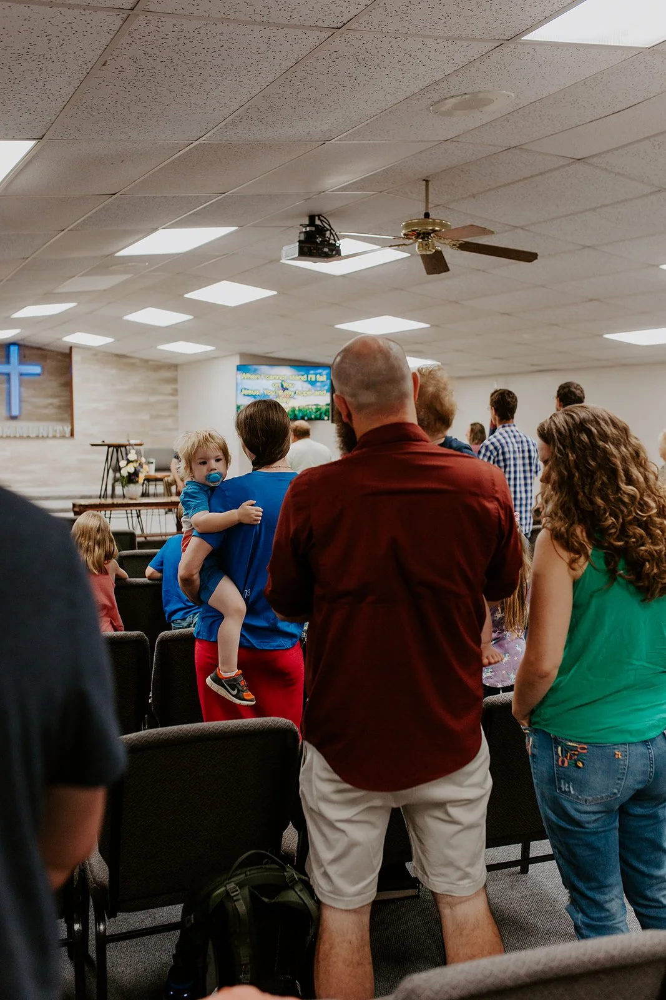

{kind=link}
{kind=link}
Join a ministry
There are a wide range of ministries for each family member to get connected and grow closer to God. We encourage you to get involved.
Find your community
Hillside Baptist Church · McLoud, Oklahoma
Following Jesus. Growing together.
There’s a place for you at Hillside.
Take your next step
Come as a neighbor. Connect as a family.
Discover life centered on Jesus.
Our heart. Our purpose.
Our mission is to build a community of devoted Christ Followers. We seek to glorify God by making disciples through the Gospel of Jesus Christ. As those who have been reconciled to God through Jesus Christ, we are now ambassadors of reconciliation to a lost and broken world. We gather, teach, disciple, and send to see God glorified through reconciliation.
Get to know HillsideA place for every generation
Make room for community
Learn and grow in God's Word.
Worship with the Hillside church family.
Snacks and questions welcome!
Faith, friendship, and life together.
Keep growing in Scripture through the week.
You're invited
Join us this Sunday for worship! Life in Jesus starts with belonging and then leads to growth, but never outside the context of community. We're excited to do life with you!
Study the Bible in community groups on Sunday nights at 6:30 PM. Snacks and questions welcome!
See events & announcements Easter 2026 announcementA glimpse of Hillside
Get involved
“For you were called to be free, brothers and sisters; only don’t use this freedom as an opportunity for the flesh, but serve one another through love.”
Galatians 5:13
There are a wide range of ministries for each family member to get connected and grow closer to God. We encourage you to get involved.
Find your communityEvents are for the community. Please feel free to attend.
See what is happeningYour giving helps support the church and the missions it supports.
Explore givingGood news for you
There’s a seat for you
333892 E 1040 Rd
McLoud, OK 74851
 Faith. Family. Hillside.
Faith. Family. Hillside.